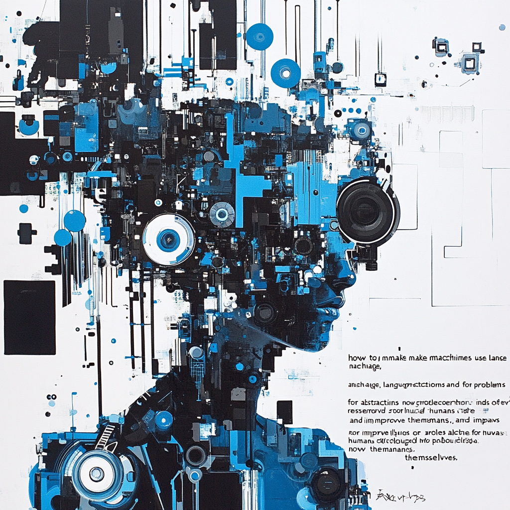
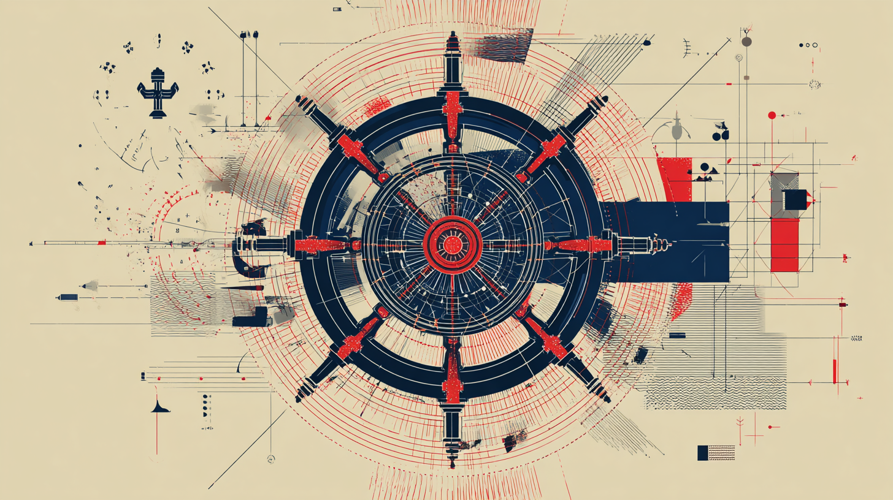
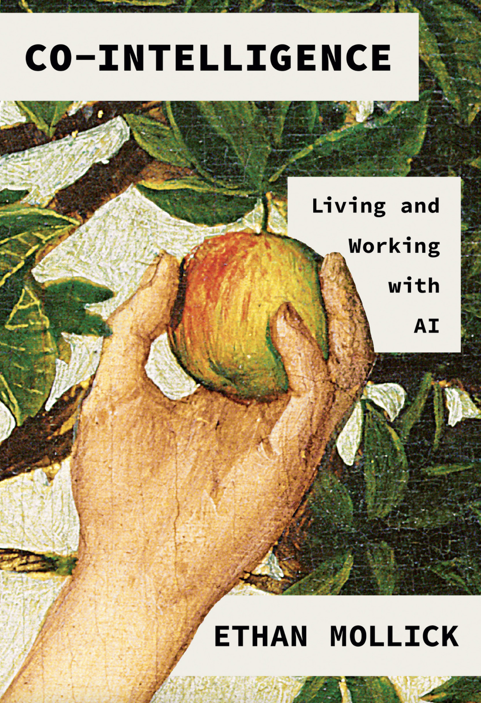
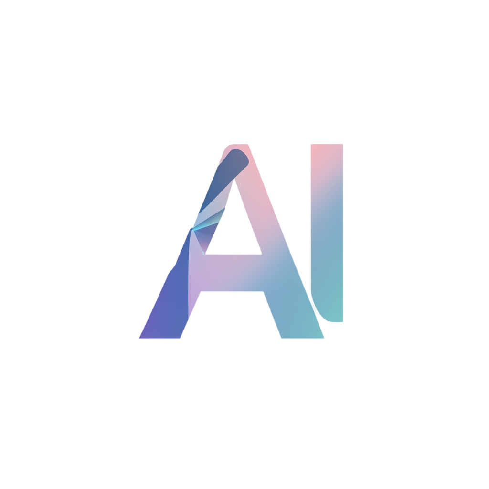
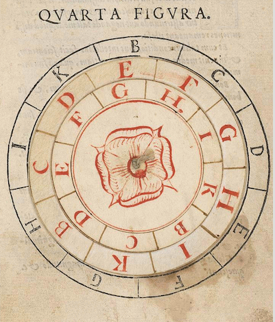
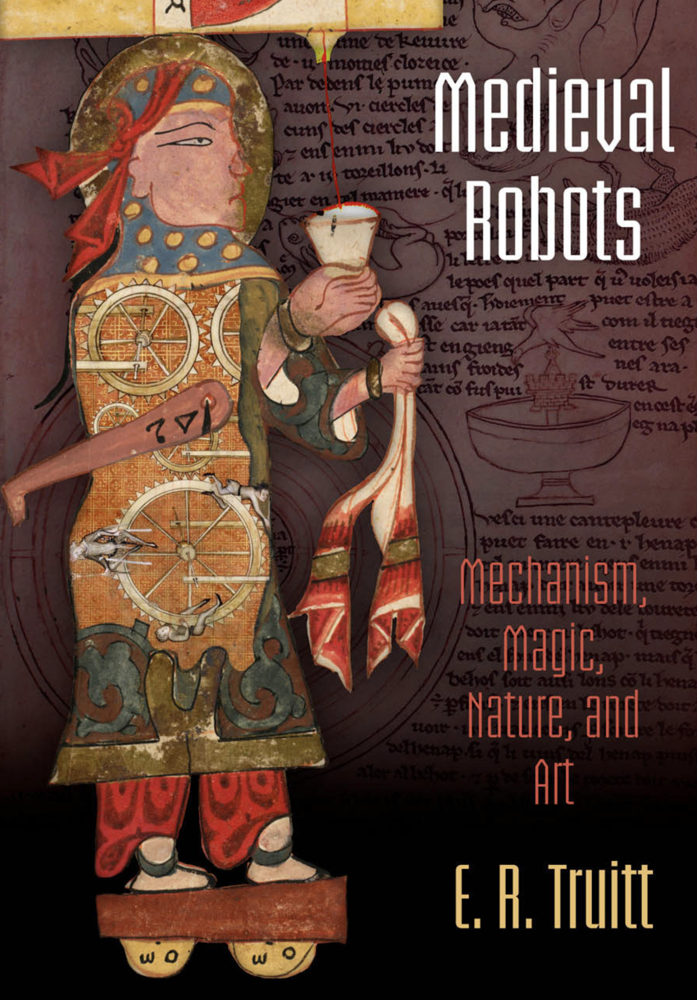
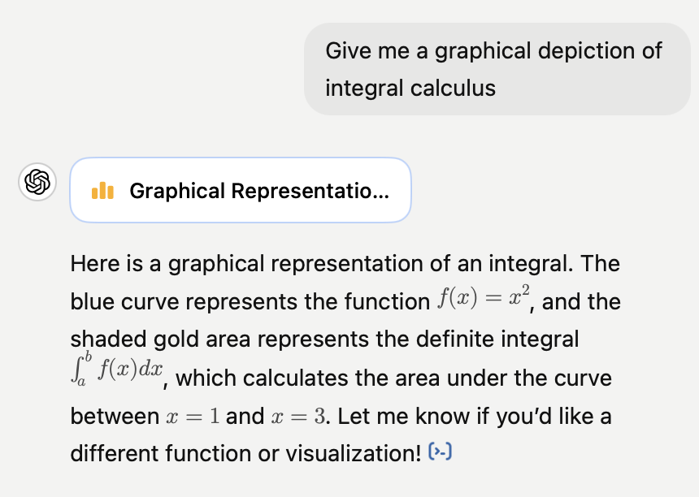
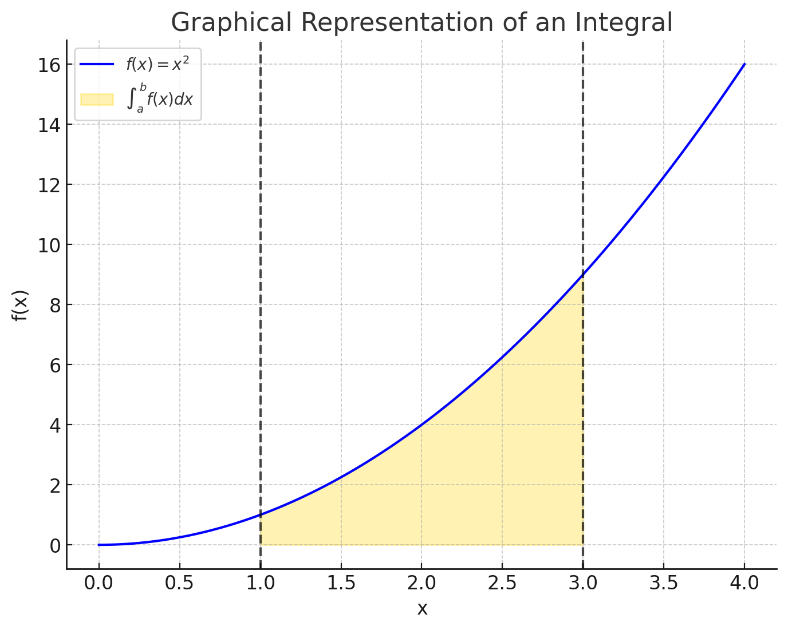
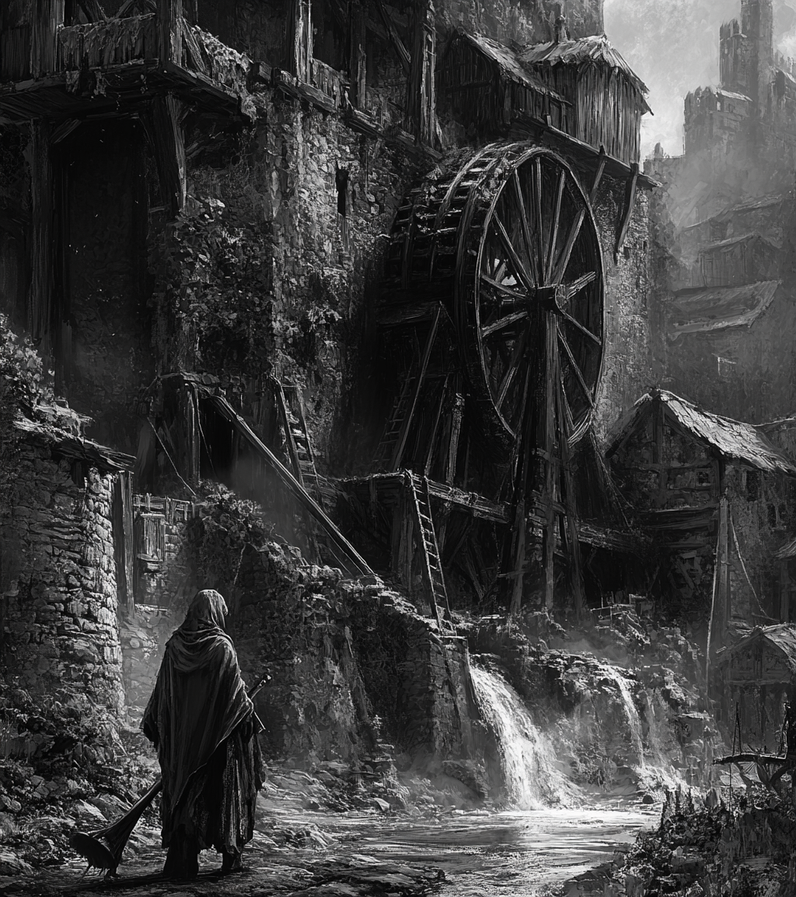

Gen AI - Week 2 - Pathways to AI
“how to make machines use language, form abstractions and concepts, solve kinds of problems now reserved for humans, and improve themselves” (McCarthy et al., 1955)

Cybernetics
Norbert Weiner
John McCarthy
Cybernetics - Governance, Steerage
Artificial Intelligence
Vision: Humans teaming with Machines (Cyborg)
Vision: A Machine Reproducing Human Intelligence
Collective
Individualized
Co-operative
Competitive
Directing (Governance)
Self-governing
"Cybernetics" - too fancy, academic; what does it even mean?
"Artificial Intelligence" - appeals to military / government / corporate funders
CyberSocial (Cope, Kalantzis)
OpenAI


Human
Donna Haraway (2016) Staying with the Trouble
Ethan Mollick (2024) Co-intelligence


AI in 2026: An Opinionated Take
What's going on in the world of AI today?
AI Consolidation
Rise of open source models
Contradictory tendencies: Increasing demand...
...but also:
In Workshop 4 we'll be examining criticisms of the environmental and social costs of AI. As a note for now: these differing trends make long term estimation hard to predict.
Agentive AI
Education Issues: Cons
Education Issues: Pros
However: "Bigger Picture" Issues
1. Predicted Erasure of White-Collar (Cognitive) Labor
2. What happens When AI works properly? Social media as Harbinger: Addictive, Compulsive AI; AI "Psychosis"
3. Concentration of Power: Owners of AI; Power Users of AI; The rest of us?
What do we need to learn now? What do we need to teach?
No easy answers.

Crisis in Higher Ed
We'll return to these themes...
... but how did we get here?
“La Longue Duree” (Annales School, Fernand Braudel)
Instruction: Make me a simple simulation that shows how the first computers were used to solve problems of derivatives for missiles
People likely know the famous first examples of computers for solving decryption. A kind of "safe" version of the origins of computing: the Nazis, evil, encrypted messages, the Allies, good, decrypted them. Then onto IBM, Apple, Microsoft!
But what of their other use? Ballistics, missile trajectory...
Galileo (pre-Calculus!)
So let's throw stone; we have essentially (simplistically) 4 variables:
Can be done by hand, but each angle + velocity needs a new set of values...
New problems: mass, shape of stone (etc. etc)
Now think about education. For military purposes, we need trigonometry, calculus, physics, ordinary differential equations...
The "computer" pre-1940s: a person (typically woman) calculating these
For those mathematically / philosophically minded:
Yahoo Finance, 2025


Proto-Computing in the 8th –13th Centuries
Al-Khwarizmi - Esposito, John L. , ed. (1999) The Oxford History of Islam, Oxford University Press ISBN: 0195107993. ; April 2006




‘If AI systems are seen as more reliable or rational than any human expert, able to take the “best possible action,” then it suggests that they should be trusted to make high-stakes decisions in health, education, and criminal justice. When specific algorithmic techniques are the sole focus, it suggests that only continual technical progress matters, with no consideration of the computational cost of those approaches and their far-reaching impacts on a planet under strain. In contrast, in this book I argue that AI is neither artificial nor intelligent. Rather, artificial intelligence is both embodied and material, made from natural resources, fuel, human labor, infrastructures, logistics, histories, and classifications. AI systems are not autonomous, rational, or able to discern anything without extensive, computationally intensive training with large datasets or predefined rules and rewards. In fact, artificial intelligence as we know it depends entirely on a much wider set of political and social structures…. At a fundamental level, AI is technical and social practices, institutions and infrastructures, politics and culture. Computational reason and embodied work are deeply interlinked: AI systems both reflect and produce social relations and understandings of the world.’ Crawford, Kate. (2021). Atlas of AI: Power, Politics, and the Planetary Costs of Artificial Intelligence (p. 8). Yale University Press. 
17th/18th Century
– final days of feudalism
– computation as rational (human)
18th/19th Century
– first days of industrial capitalism
– computation as mechanical (machine)


17th/18th C — Dawn of Modernity
19th/Early 20th — Modernity Proper
Mid 20th–Early 21st — Post/Late Modernity
Renaissance → Enlightenment Rationality
England as Factory of the World: high-precision mass mechanization
Politics & economics: false “sciences” (two world wars, Great Depression)
Mathematics: Descartes, Leibniz, Newton
The horror of the machine — Romanticism, Frankenstein, the Gothic genre
Paradox: Computation arises from negative mathematics, 1930s (Gödel, Church, Turing) — what computation cannot do
Science: Bacon, Newton
1820s — Luddism, English Socialism
First computers in WWII: differencing engines (Leibniz, Babbage → ChatGPT) — calculus for missile trajectories
Philosophy: Descartes, Spinoza, Leibniz
1830s/40s — Babbage, Lovelace, Engels, Marx (Marx cited Babbage — Marxism as response to technology; “General Intellect” looks like AI)
Post-war 1950s: AI, cybernetics, information theory (Shannon), Turing test, game theory (Nash, von Neumann) — back to ”calculemus”?
Birth of the (Political) Subject: Luther, Calvin → Descartes, Rousseau
Comte: Positivist sociology (society can be scientific)
Markets as perfect computers: neoliberalism as epistemology
”Calculemus!” (Let us Calculate — Leibniz) — but see Nietzsche’s reaction…
Darwin: Man is not the centre of things… (evolution orients towards history — perfectable or degenerative)
Post-Fordism, immaterial / flexibilized / cognitive labor
Proto-Industrialization / Globalization / Colonization
Ricœur: “Hermeneutics of Suspicion” (Marx, Nietzsche, Freud) — beyond Descartes: ideology / will to power / unconscious desire
Counter-narratives: Cultural Marxism, existentialism, poststructuralism; “ends” talk (Foucault, Fukuyama, Lyotard)
Machines: Steam Engine / Jacquard Loom
Fordism / Taylorism
Post-Enlightenment disenchantment. AI Winter / Spring / glorious Summer? Transhumanism, return to Enlightenment, or enshittification (Doctorow)?
What fundamentals makes for AI / Machine Learning / Deep Learning / Neural network?
Calculus (17th century – Leibniz, Newton)
Probability [think “stochastic parrots”] (18th/19th century – Euler, Gauss, Laplanche Fourier)
Linear algebra (19th century – James John Sylvester)
Markov Models (very early 20th century – Andrej Markov)
All the mathematics for AI in 2025 was developed by the end of the 19th century (with applications, like Markov models, in 1906/1913)
Are the last 125 years just hardware, networks & data (see LeCun 2021 - who doesn’t (quite) say this)?
Is our sense of modernity just the long shadow cast by the Enlightenment (17th / 18th century)?